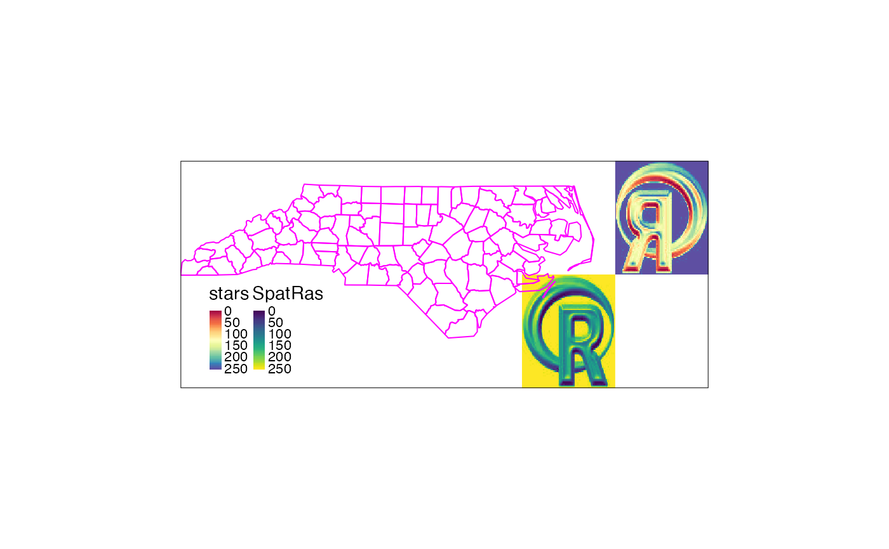

Return common bounding of multiple spatial objects
st_bbox_common(...)
st_bbox_list(l)object of the class bbox equal to the return of
st_bbox but representing the common bounding of several
input (listed) objects
library(sf)
library(sp)
#> The legacy packages maptools, rgdal, and rgeos, underpinning the sp package,
#> which was just loaded, will retire in October 2023.
#> Please refer to R-spatial evolution reports for details, especially
#> https://r-spatial.org/r/2023/05/15/evolution4.html.
#> It may be desirable to make the sf package available;
#> package maintainers should consider adding sf to Suggests:.
#> The sp package is now running under evolution status 2
#> (status 2 uses the sf package in place of rgdal)
library(raster)
library(stars)
#> Loading required package: abind
library(terra)
#> terra 1.7.39
nc <- st_read(system.file("gpkg/nc.gpkg", package = "sf"), quiet = TRUE)
# create spatial objects of different classes and extent:
sf <- nc[4:8, ]
sp <- sf::as_Spatial(nc[96:100, ])
logo <- raster(system.file("external/rlogo.grd", package = "raster")) %>% as.matrix()
rast <- rast(logo, extent = c(-77.5, -76, 33, 34.5), crs = st_crs(sf)$wkt)
stars <- st_as_stars(rast) %>% st_set_bbox(., st_bbox(.) + rep(c(1.5, 0), 2)) %>% st_flip()
r <- raster(rast) %>% setExtent(., extent(.) + rep(1.5, 4))
# common extent / bbox:
(bbox_common <- st_bbox_common(sf, sp, rast, stars, r))
#> xmin ymin xmax ymax
#> -79.07450 33.00000 -74.50000 36.55716
# map objects within their common extent:
library(tmap)
tm_shape(rast, bbox = bbox_common) + tm_raster(title = "rast", style = "cont") +
tm_shape(stars) + tm_raster(title = "stars", style = "cont", palette = "viridis") +
tm_shape(r) + tm_raster(title = "r", style = "cont", palette = "Spectral") +
tm_shape(sf) + tm_borders() +
tm_shape(sp) + tm_borders(col = "red")

l <- lapply(1:nrow(nc), function(x) nc[x, ])
st_bbox_list(l)
#> xmin ymin xmax ymax
#> -84.32385 33.88199 -75.45698 36.58965
# the bbox of the original geometry set (nc) and the bbox of its listed objects are identical:
all.equal(st_bbox_list(l), st_bbox(nc))
#> [1] TRUE